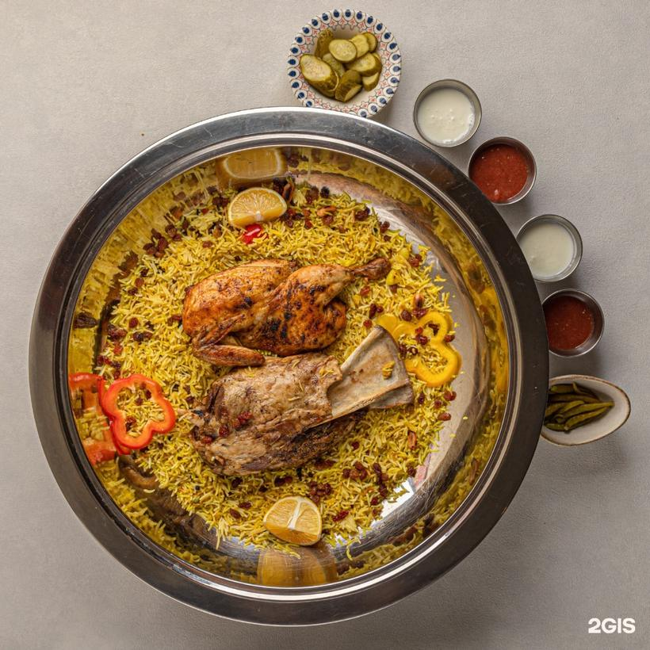
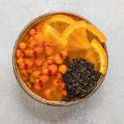

Mandi Center
Основное меню
Фирменное блюдо на компанию
Манди — традиционное блюдо из Йемена: ароматный рис, специи и мясо (чаще курица или баранина), томлённое до мягкости. Рис пропитывается мясным соком, блюдо подаётся на большом подносе с соусами.
| Фото | Название | Вариант | Цена |
|---|---|---|---|
 | Манди с курицей | на одну персону | 3 800 ₸ |
 | Манди с курицей | на 2 персоны | 7 500 ₸ |
| Манди с курицей | на 5 персон | 16 000 ₸ | |
 | Манди с бараниной | на одну персону | 8 690 ₸ |
 | Манди с бараниной | на 2 персоны | 15 290 ₸ |
| Манди с бараниной | на 5 персон | 26 290 ₸ | |
 | Манди ассорти | на 2 персоны | 13 530 ₸ |
| Манди ассорти | на 5 персон | 21 990 ₸ | |
 | Манди Судак BBQ / Фрай | 4 000 ₸ | |
 | Манди Судак | на 2 персоны | 8 500 ₸ |
| Манди с курицей BBQ | на 1 персону | 4 000 ₸ | |
| Манди с курицей BBQ | на 2 персоны | 8 500 ₸ | |
| Манди с курицей BBQ | на 5 персон | 17 000 ₸ |
Основные блюда
| Фото | Название | Вариант | Цена |
|---|---|---|---|
 | Чаппати с курицей в тарелке Курица карри, арабская лепёшка пита, хумус, овощной салат, пряный рис | 3 200 ₸ | |
 | Курица с грибами под сливочным соусом и пюре Куриное филе, обжаренное с шампиньонами под сливочным соусом, подаётся с пюре | 2 800 ₸ | |
 | Паста с курицей и грибами Тальятелли/лингвини в сливочном соусе с курицей и обжаренными грибами | 2 900 ₸ | |
 | Хумус с питой Пюре из нута с кунжутной пастой и оливковым маслом, подаётся с лепёшкой пита | 1 900 ₸ |
Fast food
| Фото | Название | Вариант | Цена |
|---|---|---|---|
 | Пита с куриным филе и соусом «айоли» Запечённое куриное филе со свежими овощами и соусом тартар | 2 500 ₸ | |
 | Чапати с курицей Лепёшка из слоёного теста с начинкой из курицы карри | 1 800 ₸ | |
 | Пита с рваным мясом Говяжье томлёное мясо под соусом барбекю, томаты, огурцы, листья салата | 3 190 ₸ | |
 | Чапати с яйцом Слоёная лепёшка с начинкой из огурца, помидора, яйца и листьев салата | 1 500 ₸ | |
 | Кутабы Тесто слоёное, начинка — сыр с зеленью | 1 500 ₸ |
Завтраки
| Фото | Название | Вариант | Цена |
|---|---|---|---|
 | Каша Тальбина Ячменная каша с финиками и грецким орехом | 1 500 ₸ | |
 | Каша рисовая с запечённой тыквой | 1 500 ₸ | |
 | Скрэмбл с хашбрауном | 3 500 ₸ | |
| — | Каша «Пять злаков» | 1 500 ₸ | |
 | Деревенский завтрак Натуральные колбаски, крем-чиз, яйца-глазунья, тостовый хлеб, корнишоны | 3 500 ₸ | |
 | Сэндвич с курицей Варёное яйцо и корнишоны, хрустящее куриное филе в панировке, булочка бриошь | 2 500 ₸ |
Супы
| Фото | Название | Вариант | Цена |
|---|---|---|---|
 | Адас (чечевичный суп) Крем-суп из красной чечевицы с насыщенным вкусом | 1 600 ₸ |
Салаты
| Фото | Название | Вариант | Цена |
|---|---|---|---|
 | Фатош / Фатуш Свежие овощи, заправка медово-горчичная | 1 900 ₸ | |
 | Салат с тыквой и свёклой С кремом из феты под медово-горчичным соусом | 2 400 ₸ | |
 | Свежая нарезка Помидоры, огурцы, кинза, укроп, петрушка, перец, редис, хумус | 2 400 ₸ | |
 | Салат с цыплёнком и грибами Айсберг, куриное филе и яйцо под соусом айоли с карамелизованными шампиньонами | 2 700 ₸ | |
 | Салат с баклажанами глейзи и фетой Обжаренный баклажан, свежие овощи, ароматная заправка | 3 100 ₸ |
Very hot
| Фото | Название | Вариант | Цена |
|---|---|---|---|
| Butter chicken masala Филе курицы, сливочно-томатный соус со специями, подаётся с рисом | 3 600 ₸ |
Гарниры
| Фото | Название | Вариант | Цена |
|---|---|---|---|
| — | Рис пряный | 800 ₸ | |
| — | Картофель фри | 950 ₸ | |
| — | Картофель Айдахо | 890 ₸ | |
| — | Картофельное пюре | 600 ₸ |
Допы к Манди
| Фото | Название | Вариант | Цена |
|---|---|---|---|
| — | Белый соус | 300 ₸ | |
| — | Красный соус | 300 ₸ | |
| — | Судак BBQ | 2 175 ₸ | |
| — | Судак фрай | 2 175 ₸ | |
| — | Курица | 1 650 ₸ | |
| — | Курица BBQ | 2 175 ₸ | |
| — | Баранина | 5 900 ₸ | |
| — | Пита лепёшка | 490 ₸ |
Барное меню Mandi
Авторский чай
| Фото | Название | Вариант | Цена |
|---|---|---|---|
| Облепиховый чай Облепиха, апельсины, цитрусовое пюре, чёрный чай | 2 190 ₸ | ||
| Вишнёвый чай с чабрецом | 2 190 ₸ | ||
 | Суданский чай с барбарисом Каркаде, ягодное пюре, барбарис | 2 190 ₸ | |
| Цитрусовый чай с маракуйей Цитрусовое пюре, маракуйя, зелёный чай сенча | 2 190 ₸ | ||
 | Марокканский чай Сок лайма, марокканские специи, мёд, зелёный чай сенча | 2 190 ₸ | |
 | Клюквенный чай с имбирём Клюквенное пюре, имбирь, лимон, чёрный чай | 2 190 ₸ |
Авторский чай 0,3
| Фото | Название | Вариант | Цена |
|---|---|---|---|
 | Облепиховый чай 0,3 | 980 ₸ | |
 | Малина-манго 0,3 | 980 ₸ | |
 | Черника-имбирь | 980 ₸ | |
 | Ежевика-гвоздика | 980 ₸ | |
 | Груша-чабрец | 980 ₸ |
Кофейная классика
| Фото | Название | Вариант | Цена |
|---|---|---|---|
 | Эспрессо Крепкий кофейный напиток с балансом горечи и кислотности | 590 ₸ | |
 | Капучино На основе эспрессо, с плотной молочной пеной | S | 980 ₸ |
| Капучино На основе эспрессо, с плотной молочной пеной | M | 1 290 ₸ | |
 | Американо Двойной эспрессо с горячей водой | S | 890 ₸ |
| Американо Двойной эспрессо с горячей водой | M | 990 ₸ | |
 | Латте Эспрессо и подогретое молоко | M | 1 290 ₸ |
| Флэт Уайт Двойной эспрессо и подогретое молоко | 1 390 ₸ | ||
 | Раф кофе Эспрессо и сливки 10% жирности | 1 690 ₸ |
Не кофе
| Фото | Название | Вариант | Цена |
|---|---|---|---|
 | Айс матча манго Молочный напиток на манговом пюре и зелёной матче | 0,4 | 1 690 ₸ |
 | Апельсиновый фреш Свежевыжатый апельсиновый сок | 0,25 | 2 100 ₸ |
 | Тайский ice tea Тайский чай Анчан и апельсиновое пюре | 0,4 | 1 390 ₸ |
 | Цитрусовый ice tea Цитрусовое пюре и чай эрл грей | 0,4 | 1 190 ₸ |
 | Ice blue матча карамель Голубая матча с карамелью | 0,4 | 1 690 ₸ |
 | Ice tea жасмин-клубника | 0,4 | 1 190 ₸ |
 | Морс ягодный Микс ягод клюквы и ежевики | 1 л | 1 890 ₸ |
| — | Какао | 900 ₸ | |
| — | Ежевичный ice tea | 0,4 | 1 290 ₸ |
 | Домашний лимонад | 0,3, натуральный без газа | 700 ₸ |
| Домашний лимонад | 0,5, натуральный без газа | 1 200 ₸ | |
 | Домашний лимонад | 1 л, натуральный без газа | 2 400 ₸ |
Фирменные лимонады
| Фото | Название | Вариант | Цена |
|---|---|---|---|
 | Клубничный лимонад Клубничное и грушевое пюре | 1 л | 2 790 ₸ |
| — | Клубничный лимонад | 0,5 | 1 390 ₸ |
 | Ягодный микс Пюре клюквы и ежевики | 1 л | 2 790 ₸ |
| — | Ягодный микс | 0,5 | 1 390 ₸ |
 | Грушевый лимонад Грушевое и манговое пюре | 1 л | 2 790 ₸ |
| — | Грушевый лимонад | 0,5 | 1 390 ₸ |
 | Цитрусовый лимонад Апельсиновое пюре и свежие цитрусы | 1 л | 2 790 ₸ |
| — | Цитрусовый лимонад | 0,5 | 1 390 ₸ |
 | Лимонад киви-алоэ Сладость и кислинка киви с лёгкой сладостью алоэ | 0,5 | 1 590 ₸ |
| — | Лимонад киви-алоэ | 1 л | 2 990 ₸ |
Листовой чай
| Фото | Название | Вариант | Цена |
|---|---|---|---|
| — | Молочный улун | 1 500 ₸ | |
| — | Те гуань инь | 1 500 ₸ | |
| — | Эрл грей | 1 500 ₸ | |
| — | Ассам Классический чёрный чай | 1 200 ₸ | |
| — | Тары чай | 2 400 ₸ |
Смузи / милкшейки
| Фото | Название | Вариант | Цена |
|---|---|---|---|
 | Черничный смузи Ягоды черники, банан и черничное пюре | 0,4 | 1 990 ₸ |
 | Ягодный смузи Ягодное пюре и ягоды | 0,4 | 1 990 ₸ |
 | Ванильный милкшейк Сливочное мороженое, молоко, взбитые сливки | 0,3 | 1 590 ₸ |
 | Клубничный милкшейк Клубничное мороженое, молоко, взбитые сливки | 0,3 | 1 590 ₸ |
| Смузи киви-финики Свежие финики и киви | 0,3 | 1 990 ₸ | |
| — | Финиковый милкшейк | 1 900 ₸ |
Ice coffee
| Фото | Название | Вариант | Цена |
|---|---|---|---|
| Айс латте Эспрессо и молоко | 0,3 | 1 490 ₸ | |
 | Айс капучино Двойной эспрессо и молоко | 0,3 | 1 490 ₸ |
 | Бамбл кофе Апельсиновый фреш и двойной эспрессо | 0,3 | 2 700 ₸ |
 | Колд макадамия | 0,3 | 1 590 ₸ |
Освежающие напитки
| Фото | Название | Вариант | Цена |
|---|---|---|---|
| — | Мекка cola Арабская классика — глубокий вкус традиционной колы | 1 050 ₸ | |
| — | Milaf cola На основе фиников — насыщенный вкус с карамельными нотками | 1 050 ₸ | |
| — | Kinza в ассортименте Лимонно-лаймовый арабский напиток | 1 050 ₸ |
Тоник
| Фото | Название | Вариант | Цена |
|---|---|---|---|
| — | Малиновый тоник | 2 280 ₸ | |
| — | Цитрусовый тоник | 2 280 ₸ | |
| — | Ягодный тоник | 2 280 ₸ | |
| — | Батч-брю тоник | 2 280 ₸ | |
| — | Швепс | 1 200 ₸ |
Барное меню Karak
Чаи
| Фото | Название | Вариант | Цена |
|---|---|---|---|
 | Фирменный карак чай | на компанию | 3 800 ₸ |
| — | Магриби | S | 850 ₸ |
| — | Магриби | M | 1 050 ₸ |
| — | Фирменный карак чай | M | 1 250 ₸ |
| — | Фирменный карак чай | S | 950 ₸ |
Десерты
Десерты с витрины
| Фото | Название | Вариант | Цена |
|---|---|---|---|
| — | Финики в шоколаде | 800 ₸ | |
| — | Чизкейк испанский | 2 000 ₸ | |
| — | Фисташковый рулет | 2 500 ₸ | |
| — | Чизкейк тары | 2 000 ₸ | |
| — | Наполеон | 2 200 ₸ | |
| — | Медовик | 1 900 ₸ | |
| — | Орешек со сгущёнкой | 350 ₸ | |
| — | Вафельная трубочка с варёной сгущёнкой нет в наличии | нет цены | |
| — | Чайное ассорти из орехов и сухофруктов | 3 000 ₸ | |
| — | Жент | 350 ₸ |